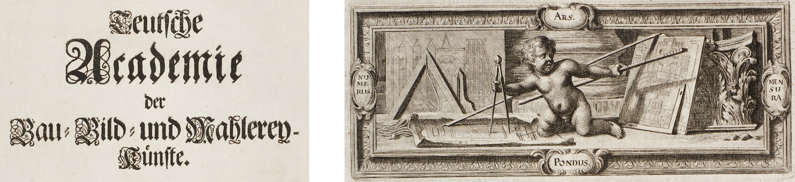
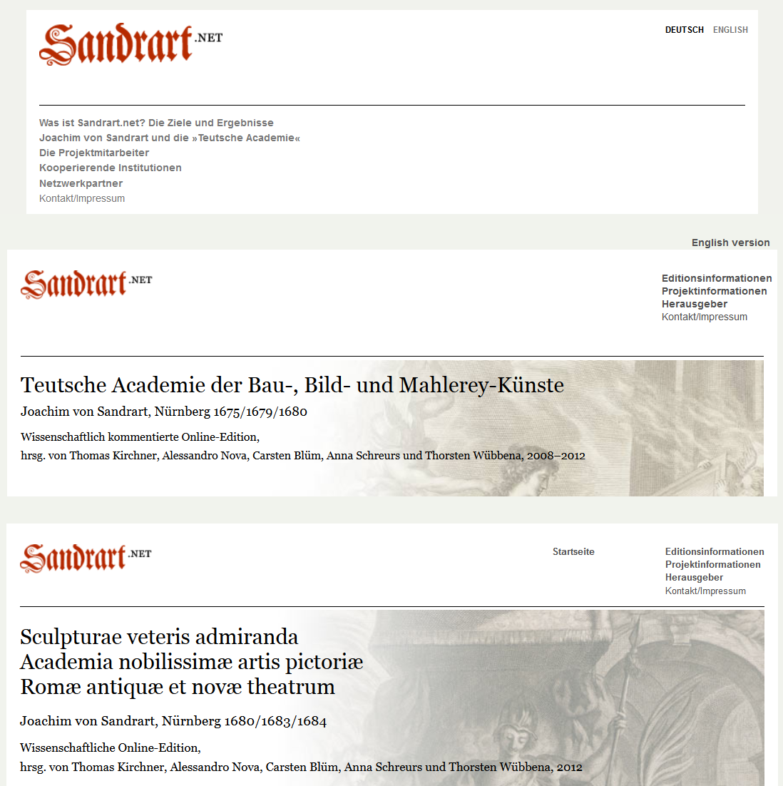
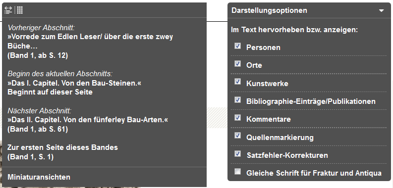
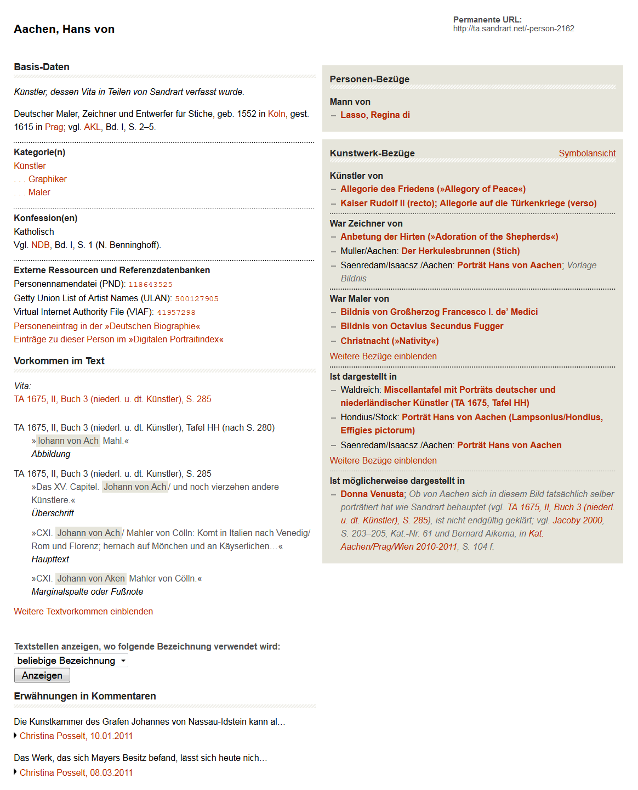
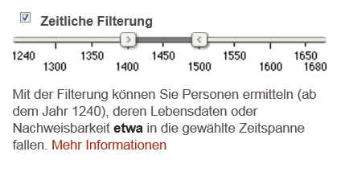
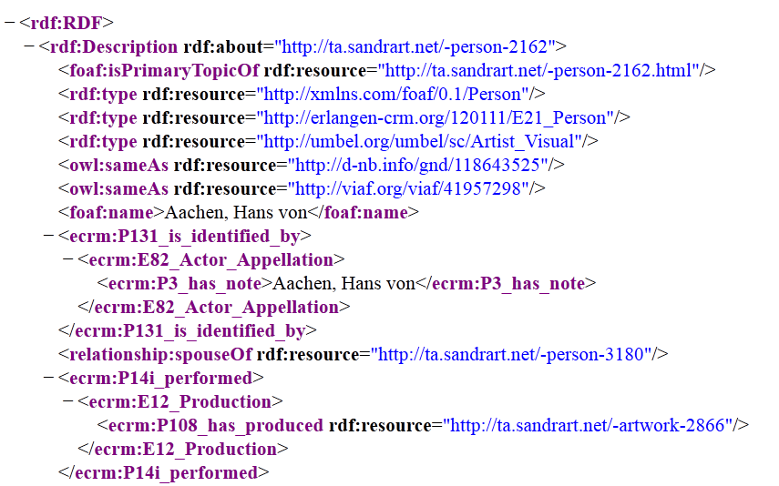

Sandrart.net
Table of Contents
Abstract
Sandrart.net describes itself as a 'research platform for the history of art and culture of the 17th century'. It is a digital edition of Joachim von Sandrart’s magnum opus, the 'Teutsche Academie', published between 1675 and 1680 in a German and between 1680 and 1684 in a Latin version. Facsimiles and full texts for both publications are provided as well as a bibliography and additional texts. Browse and search functionalities allow for easy access. Particular emphasis lies on commenting the text and identifying entities such as places, works of art or persons, for which extensive dossiers are provided. These kind of information can also be downloaded as raw XML and as semantic data expressed in RDF. The project undoubtedly marks the state of the art in the critically digitizing and editing 17th century prints.
Sandrart.net, eine netzbasierte Forschungsplattform zur Kunst- und Kulturgeschichte des 17. Jahrhunderts, unter der wissenschaftlichen Leitung von Thomas Kirchner und Alessandro Nova, durchgeführt von Anna Schreurs und Thorsten Wübbena, technisch realisiert von Carsten Blüm, Kunstgeschichtliches Institut der Goethe-Universität Frankfurt am Main, Projektlaufzeit 2007-2012.
Sandrart.net ist eine Online-Edition der 'Teutschen Academie der Edlen Bau-, Bild- und Mahlerey-Künste', dem zwischen 1675 und 1680 in mehreren Teilen erschienenen kunstliterarischen Hauptwerk Joachim von Sandrarts (1606-1688) sowie der zwischen 1680 und 1684 in drei Bänden publizierten lateinischen Übersetzung und Überarbeitung davon. Die im Rahmen eines insgesamt fünfjährigen DFG-Projektes entstandene Edition ist vor allem kunsthistorisch ausgerichtet. Sie wurde in Kooperation zwischen dem kunstgeschichtlichen Institut der Goethe-Universität Frankfurt am Main, dem Kunsthistorischen Institut in Florenz (Max Planck Institut), dem Städel-Museum und dem Historischen Museum in Frankfurt und weiteren Einrichtungen sowie einer Reihe von externen Fachwissenschaftlern erarbeitet.


Die Qualität der digitalen Abbildungen ist gut. Zwar gibt es keine großen Zoomreserven, doch ist dies bei einem gedruckten Buch der vorliegenden Qualität zunächst unproblematisch. Die Faksimiles sind genauso gut lesbar wie die Vorlage – aber eben auch nicht besser. Für die Kupferstiche hätte es Sinn gemacht, ein Zooming jenseits der '100%' (das sind rund 1300*2000 Pixel und unter 150dpi) anzubieten.Die Archivaufnahmen haben eine Qualität, die diese Option eröffnet, so dass sie vielleicht in der Zukunft noch genutzt werden könnte. Der Volltext wurde eher quellennah transkribiert und weist nur maßvolle, gut begründete Eingriffe auf. Das Vorgehen bei der Textbehandlung ist ebenso gut dokumentiert wie das Projekt insgesamt und viele seiner konzeptionellen und technischen Aspekte. Dies sollte in einem wissenschaftlichen Projekt selbstverständlich sein, wird im digitalen Bereich aber oft nicht erfüllt. Die Dokumentation des sandrart.net verdient deshalb eine besondere, lobende Erwähnung.
Die Edition hat ihren Schwerpunkt nicht in der kritischen Textbehandlung oder der Beleuchtung der Werkgenese. Der Drucktext ist in TEI-Lite codiert und folgt damit dem gängigen Standard. Der Fokus des Projekts liegt vielmehr auf einer sehr weit gehenden Tiefenerschließung, die in einem eigenen lokalen Datenmodell auf der Basis einer relationalen Datenbank abgebildet ist. Damit ist auch der technische Rahmen der Umsetzung abgesteckt: Die XML-Daten der Volltexte und die weiteren Erschließungsinformationen werden in einerDatenbank verwaltet; PHP-Skripte sorgen für die Transformation der XML-Daten, die Kommunikation mit der Datenbank und die Generierung der Web-Präsentation und weiterer Ausgabeformen.
In der Benutzung präsentiert sich die Teutsche Akademie zunächst gefällig und professionell gestaltet. Die prinzipielle Dreigliedrigkeit des Projekts ist bei der ersten Benutzung verwirrend, entbehrt aber nicht einer gewissen Logik: Im Grunde bilden die Projektbeschreibung, die deutsche Ausgabe und die lateinische Ausgabe eigenständige Websites, die eine gemeinsame visuelle Gestaltung haben, funktional aber nicht in eine Gesamtausgabe integriert sind. Eine klarere Kennzeichnung des 'Sie sind jetzt hier ...' z.B. durch prominente Titel (Projekt vs. Teutsche Akademie vs.[zu bildender prägnanter Titel für die lateinische Ausgabe]) würde vermeiden, dass man sich zuweilen fragt, in welchem Inhaltsbereich man sich eigentlich befindet, zumal bei einem Wechsel der Bereiche immer neue Fenster bzw. Tabs aufgemacht werden.





Die vorliegende digitale Ausgabe der Teutschen Akademie kann der Forschung vielfältigen Nutzen stiften. Auf vier sei hingewiesen: (1.) Der traditionelle Zugang, das 'Lesen' oder lesende Nachschlagen des Werkes wird durch das gut erreichbare Faksimile, den zuverlässigen Volltext und die erschließenden und kommentierenden Zusatzinformationen in einer Weise unterstützt, die nur theoretisch auch in einer gedruckten Ausgabe möglich gewesen wäre. Diese hätte aber weder das Vollfaksimile, noch die Menge der Kommentare und Erschließungsinformationen aufnehmen können und wäre sehr viel weniger komfortabel – nämlich unabhängig von Zeit, Ort und Geldbeutel – erreichbar gewesen. Hinzu kommt (2.) die jetzt vielleicht naheliegendste Nutzungsform des gezielten Recherchierens nach Wörtern, Künstlern, Kunstwerken und deren weiteren Kontexten. Schließlich ist davon auszugehen, dass die Teutsche Akademie vor allem als Quelle von Forschungen benutzt wird, die sich auf bestimmte Zeiten, Künstler, Kunstwerke oder andere kunsthistorische Fragestellungen beziehen. Hier ist der Charakter eines Informationsportals ebenso wichtig wie die unmittelbare Vernetzbarkeit der Informationen in einer sich potentiell im Digitalen vollziehenden und präsentierenden Forschung. Als weiterer (3.) Bereich der Nutzung ist auf die mögliche analytische Verwendung des Gesamtdatenbestandes hinzuweisen. Das betrifft zum Einen den Volltext, der als TEI-XML sowohl als einzelnes (z.B. auch sprachliches) Werk untersucht werden kann, als auch als Teil eines z.B. unter kunsthistorischer Perspektive zusammengestellten größeren Korpus. Das betrifft zum anderen aber auch die Erschließungsinformationen als systematischen Datenpool, der auf einer semantischen Ebene ein Bild der kunsthistorischen Wahrnehmung des 17. Jahrhunderts bietet. Auch hier könnten alte und neue Fragestellungen nun auf eine neue Weise operationalisiert werden, in der aufbereitetes Wissen systematisch ausgewertet würde und damit zu neuen Antworten führen könnte. Schließlich bildet sandrart.net (4.) selbst ein Forschungsergebnis, auf dem weiter aufgebaut werden kann, weil hier die Kontextualität des Werkes aufgearbeitet ist: Die weiteren Bezüge der genannten Texte, Personen und Kunstwerke sind aufgedeckt, der Bezugsrahmen, in dem sich Joachim von Sandrart bewegt hat, sein 'Horizont' sozusagen, ist ausgeleuchtet, seine Quellen aufgedeckt und die vielfältigen Verbindungen der besprochenen Gegenstände sind explizit gemacht.
Aber was ist sandrat.net jetzt eigentlich? Auf der Projektseite steht, es sei 'eine netzbasierte Forschungsplattform zur Kunst- und Kulturgeschichte des 17. Jahrhunderts'. Nun kann man unter dem Begriff 'Forschungsplattform' verschiedenes verstehen. Ich verstehe darunter eine Plattform bzw. eine 'Umgebung', auf bzw. in der Forschung stattfindet und ihren Niederschlag findet. Das trifft zu, wenn man die Projektlaufzeit in den Vordergrund stellt. Zu dieser Zeit hat offensichtlich eine breite Forschung, auch in Kollaboration mit externen Beiträgern stattgefunden, wie man an den Sachkommentaren sehen kann. Sandrart.net ist aber mit dem Ende der Projektförderung in einen eher statischen Zustand übergegangen, verliert dabei den Charakter einer Forschungsplattform und wird eher zu einer grundlegenden Informationsressource, die in anderen Kontexten eingebunden und genutzt werden kann. Das aber muss gar kein Nachteil sein, sondern entspricht der Logik der Forschungsförderung und Forschungspraxis, bei der erreichte Stände zu einem abschließenden Publikationszeitpunkt 'eingefroren' werden. Von den Projektverantwortlichen wird auch deutlich gesagt, dass die Edition einen finalen Zustand erreicht hat und nicht den Anspruch immerwährender Offenheit und Erweiterung erhebt. Auf der anderen Seite ist aber nicht auszuschließen, dass die HAB in Zukunft dafür sorgen wird, dass sandrart.net nicht nur zugänglich bleibt, sondern vielleicht auch um neue Informationen ergänzt wird, wo sie von den Fachwissenschaften zugeliefert werden. An anderer Stelle kann man auf der Webseite lesen: 'Ziel des Projekts war eine kommentierte und informationstechnisch stark angereicherte Online-Edition'. Dieses Ziel muss man auf jeden Fall als in vorbildlicher Weise erreicht bezeichnen. Im Rahmen der hier begonnenen Reihe von Besprechungen 'digitaler Editionen' muss allerdings dieser Begriff genauer unter die Lupe genommen werden. Traditionell zielt der Begriff der 'Edition' häufig auf textkritische und textkonstitutive Operationen. Diese stehen hier nicht im Vordergrund, auch wenn der Umgang mit dem Text, seine Transkription und die Dokumentation der editorischen Regeln allen wissenschaftlichen Ansprüchen genügen. Daneben gibt es aber auch schon lange andere editorische Schulen, wie z.B. das 'documentary editing', die weniger auf Textkritik und mehr auf die äußere Erschließung der Dokumente und die innere oder 'Tiefenerschließung' ihres Informationsgehaltes zielen. In diesem Rahmen handelt es sich bei sandrart.net auf jeden Fall um eine (wissenschaftliche) digitale Edition. Wenn eine solche wiederum durch die Aspekte der Wiedergabe und Erschließung gekennzeichnet ist, dann muss sandrart.net insgesamt als Reproduktionsprojekt als sehr gut und als Erschließungsprojekt als grandios und vorbildlich bezeichnet werden.
Im Einzelnen ist zusammenzufassen, dass die Basisinhalte (Bilder, Texte) tadellos aufbereitet sind. Die Präsentationsoberfläche ist in ihrer Grundstruktur und ihren Funktionalitäten gut benutzbar und mächtig, wenn auch manchmal etwas verwirrend. Die Dokumentation des Projekts und seiner Vorgehensweise deckt in vorbildlicher Weise alle wesentlichen Bereiche ab, auch wenn man sich vielleicht mehr kontextualisierende Informationen zum Werk und seiner Genese gewünscht hätte. Im Bereich der Tiefenerschließung schließlich setzt das Projekt wirklich Maßstäbe und leistet einen wertvollen Beitrag zur Definition des state of the art. Sowohl in der Art und Menge der Erschließungsinformationen als auch in ihrer funktionalen Nutzung, in ihrer Präsentation und in der Vernetzung mit anderen Ressourcen bleiben kaum Wünsche offen. Die Teutsche Akademie und die in ihr enthaltenen Informationen sind insgesamt so aufbereitet, dass sie in einem kommenden semantischen Netz der kunsthistorischen Forschung unmittelbar eingebunden werden kann. In der Erschließungund Aufbereitung von Wissen und in der Vorbereitung einer stabilen und dauerhaft nutzbaren und nachnutzbaren wissenschaftlichen Ressource ist sandrart.net somit vorbildhaft und zur Orientierung für ähnlich gelagerte Vorhaben nur zu empfehlen.
Bibliography
- Projektseite: http://www.sandrart.net/; Sandrarts 'Teutsche Akademie': http://ta.sandrart.net/; Lateinische Ausgabe: http://la.sandrart.net/.
- Projektbericht: Thorsten Wübbena, Carsten Blüm und Anna Schreurs.'Sandrart.net – An online edition of a seventeenth-century text.' New Technologies in Medieval and Renaissance Studies. Vol. 4. Eds. Gniady, Tassie, Kris McAbee und Jessica Murphy. Iter/ACMRS 2014. Deutsche Fassung des Beitrags: Thorsten Wübbena, Carsten Blüm und Anna Schreurs.'Sandrart.net: Eine Online-Edition eines Textes des 17. Jahrhunderts.' Preprint: http://publikationen.ub.uni-frankfurt.de/frontdoor/index/index/docId/23398.
- Sandrart als Thema bei arthistoricum.net: http://www.arthistoricum.net/themen/themenportale/geschichte-der-kunstgeschichte/quellen-zur-geschichte-der-kunstgeschichte-digital/joachim-von-sandrart-1606-1688.
- Katalog zur Ausstellung anlässlich der Übernahme von sandrart.net durch die Herzog-August-Bibliothek in Wolfenbüttel: Schreurs, Anna, ed. Unter Minervas Schutz – Bildung durch Kunst in Joachim von Sandrarts Teutscher Academie, Katalog der Ausstellung in Wolfenbüttel (Herzog August Bibliothek), 02.09.2012–24.02.2012. Wiesbaden: Harrasowitz 2012.
Notes
- Siehe http://de.wikipedia.org/wiki/Wikipedia:PND/BEACON. ↑
- Wenn in der Beacon-Datei (http://ta.sandrart.net/services/pnd-beacon/) mit '118643525' Hans von Aachen identifiziert ist, dann führt der Wikipedia-Artikel http://de.wikipedia.org/wiki/Hans_von_Aachen zum entsprechenden Treffer in der Wikipedia-Personensuche (http://toolserver.org/~apper/pd/person/Hans_von_Aachen), die auf die formale Adresse http://ta.sandrart.net/services/pnd-beacon/?pnd=118643525 verweist, die sandrart-seitig wiederum zu einer Darstellungsseite unter http://ta.sandrart.net/edition/person/view/2162 aufgelöst wird. ↑
- Siehe http://ta.sandrart.net/de/info/services/lod-rdf/. ↑
- Nach Auskunft von Christian Thomas vom DTA waren die Texte bereits im April 2013 integriert worden. Innerhalb eines abgestuften Prozesses der Sichtbarkeit tauchten sie nur in der allgemeinen Browsing-Liste noch nicht auf, die der Rezensent konsultiert hat. ↑
- Siehe http://www.deutschestextarchiv.de/ – bis zum Mai 2014 ist diese Ankündigung allerdings noch nicht wahr gemacht worden. 5 ↑
- Siehe http://ta.sandrart.net/de/info/technik/tei-download/. ↑
@article{sandrart,
author = {Sahle, Patrick},
title = {Sandrart.net},
journal = {RIDE – A review journal for digital editions and resources},
number = {1},
year = {2014},
doi = {10.18716/ride.a.1.5},
url = {https://doi.org/10.18716/ride.a.1.5},
}TY - JOUR
AU - Sahle, Patrick
TI - Sandrart.net
T2 - RIDE – A review journal for digital editions and resources
IS - 1
PY - 2014
DA - 2014/06
DO - 10.18716/ride.a.1.5
UR - https://doi.org/10.18716/ride.a.1.5
PB - Institut für Dokumentologie und Editorik e.V.
LA - de
ER - Sahle, P. (2014). Sandrart.net. RIDE – A review journal for digital editions and resources, (1). https://doi.org/10.18716/ride.a.1.5Sahle, Patrick. "Sandrart.net." RIDE – A review journal for digital editions and resources, no. 1, 2014. https://doi.org/10.18716/ride.a.1.5.Sahle, Patrick. "Sandrart.net." RIDE – A review journal for digital editions and resources, no. 1 (2014). https://doi.org/10.18716/ride.a.1.5.